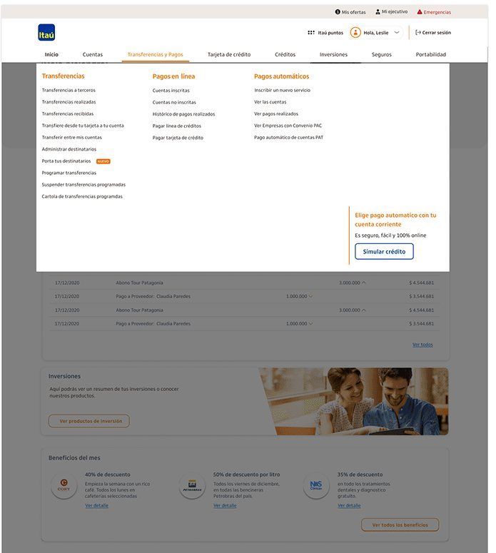
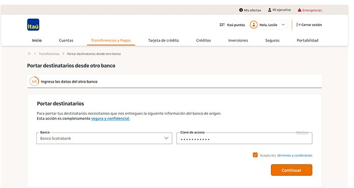
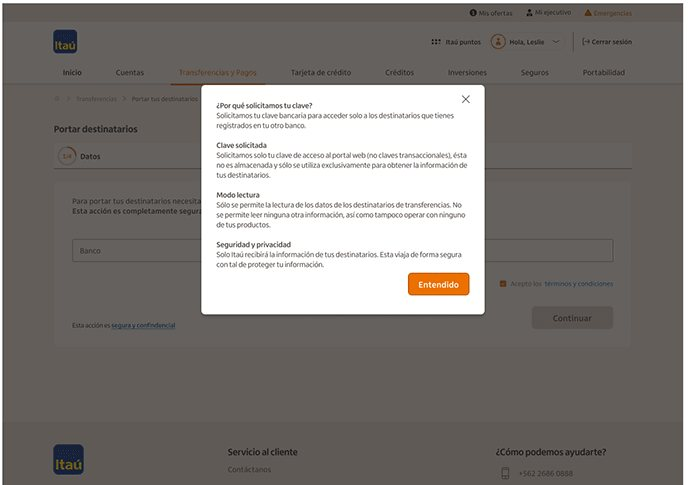
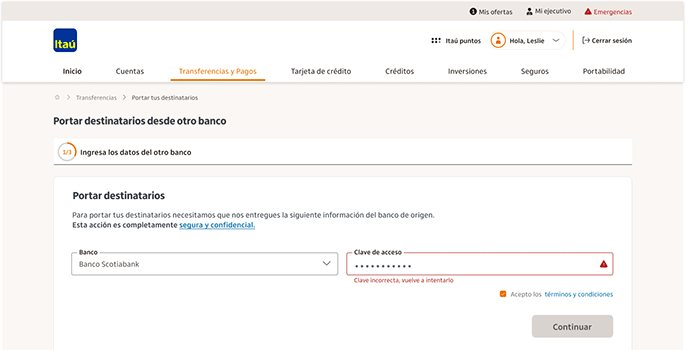
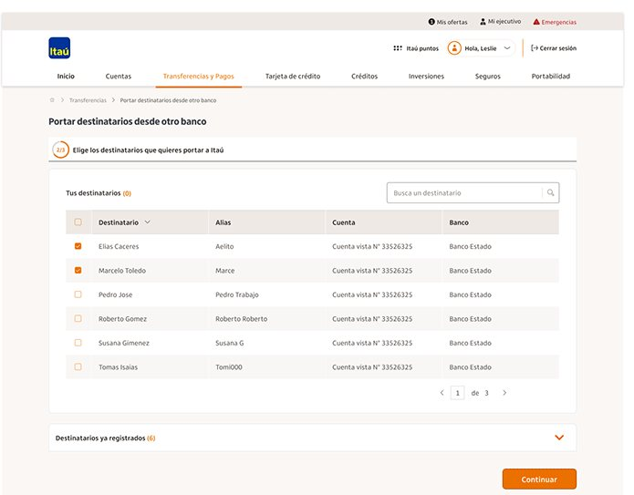
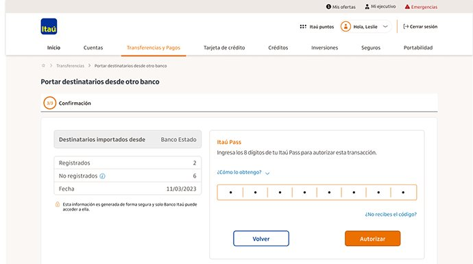

07Web banking · UX/UIHome banking · UX/UI · 2023
Itaú Chile — Transfer recipientsItaú Chile — Portabilidad de destinatarios
A new feature for Itaú Chile's web banking that lets users bring their saved transfer recipients over from another bank.
Una nueva funcionalidad del home banking de Itaú Chile que permite traer los destinatarios de transferencia guardados en otro banco.

The project
El proyecto
A new feature for Itaú Chile's web banking that lets users bring their saved transfer recipients over from another bank, instead of recreating each one by hand.
Una funcionalidad nueva del home banking de Itaú Chile que permite traer los destinatarios de transferencia guardados en otro banco, en lugar de volver a cargarlos uno por uno.
Process
Proceso
I started on the UX side: analyzing how competitors worked, whether they offered this feature, and investigating the topic in depth to find solutions. Then I designed the UI and tested it with users in moderated sessions to confirm the feature was understood and could be used easily and quickly.
Empecé por el lado UX: analicé cómo funcionaba la competencia, si ofrecía esta funcionalidad, e investigué el tema a fondo para encontrar soluciones. Después diseñé la UI y la testeé con usuarios en sesiones moderadas para confirmar que se entendía y se podía usar de forma fácil y rápida.





